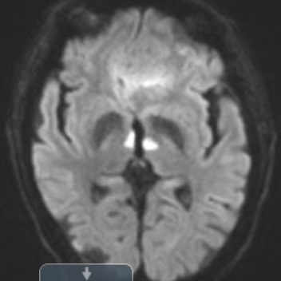
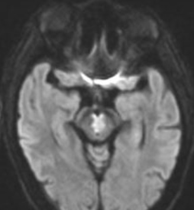
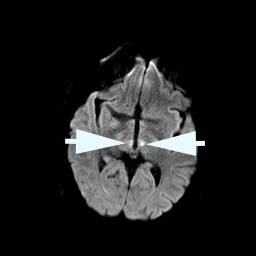
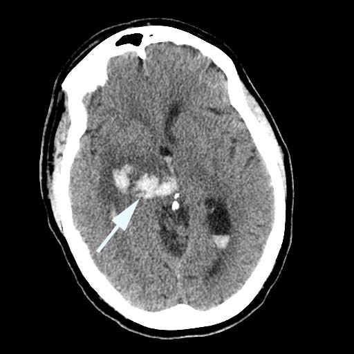

Thalamic or Tegmental Midbrain Syndrome
- Vertical gaze palsy caused by a thalamic or tegmental midbrain lesion
- Often accompanied by vertical gaze palsies, downgaze deviation, third nerve palsy, skew deviation, low arousal state, and other neurologic deficits
- Clinical features overlap with the dorsal midbrain syndrome
- Common causes: thalamic hemorrhage or infarction from occlusion of a proximal (P1) branch of posterior cerebral artery (“top of the basilar syndrome”)
- Uncommon causes: tumor, trauma, demyelination, aneurysm


- Core clinical features
-
Possible accompanying neuro-ophthalmic features
- Fourth nerve palsy
- Torsional nystagmus
- Esotropia
- Exotropia
-
Possible accompanying neurologic features
- Low arousal state
- Hemiparesis or quadriparesis
- Hypesthesia
- Ataxia
- Aphasia
-
Imaging features
- Thalamic infarct, hemorrhage, inflammation, tumor
- Midbrain infarct, hemorrhage, inflammation, tumor

- Third nerve palsy
- Graves disease
- Myasthenia gravis
- Fisher variant of Guillain-Barré syndrome
- Toxic or metabolic encephalopathy
- Encephalitis
- Order brain MRI for confirmation
-
Tip: the combination of low arousal state, vertical gaze deficits, and unilateral third nerve palsy directs attention to the thalamic-tegmental midbrain region
- CT may not show the lesion, but MRI usually does
- Degree of resolution of clinical manifestations depends on the severity and nature of lesion
- Low arousal level usually improves first
- Ocular motor abnormalities often endure, but ataxia endures even longer
- Diplopia can sometimes be palliated